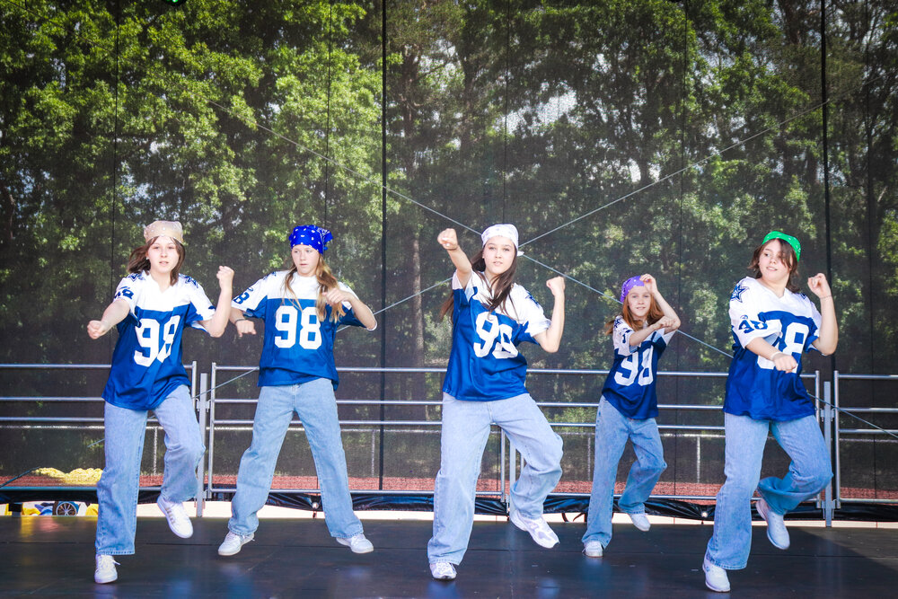
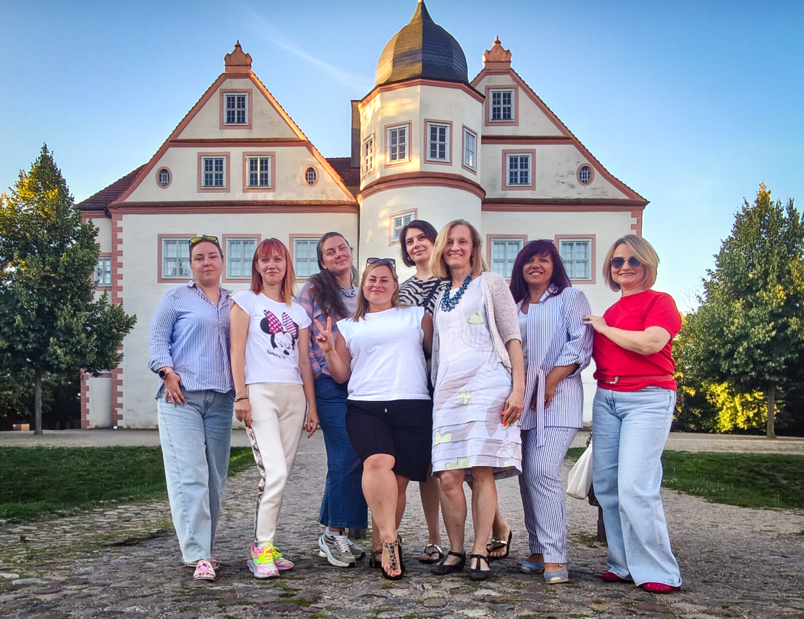
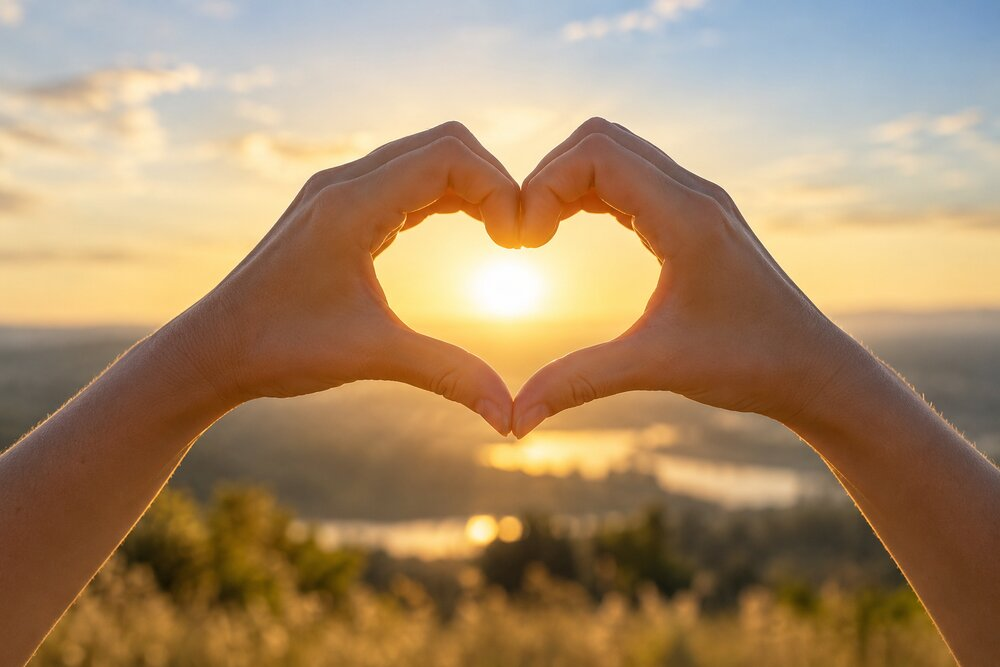
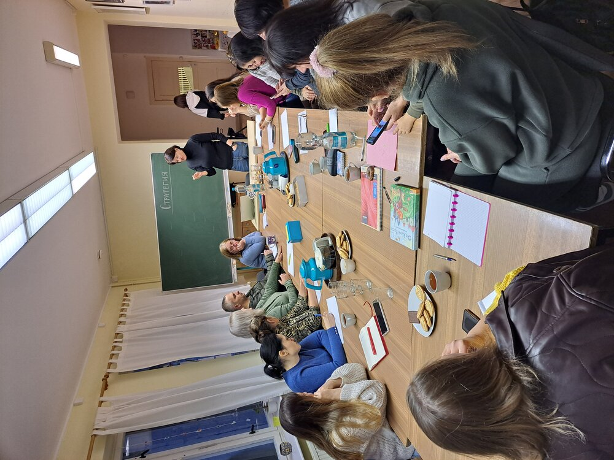
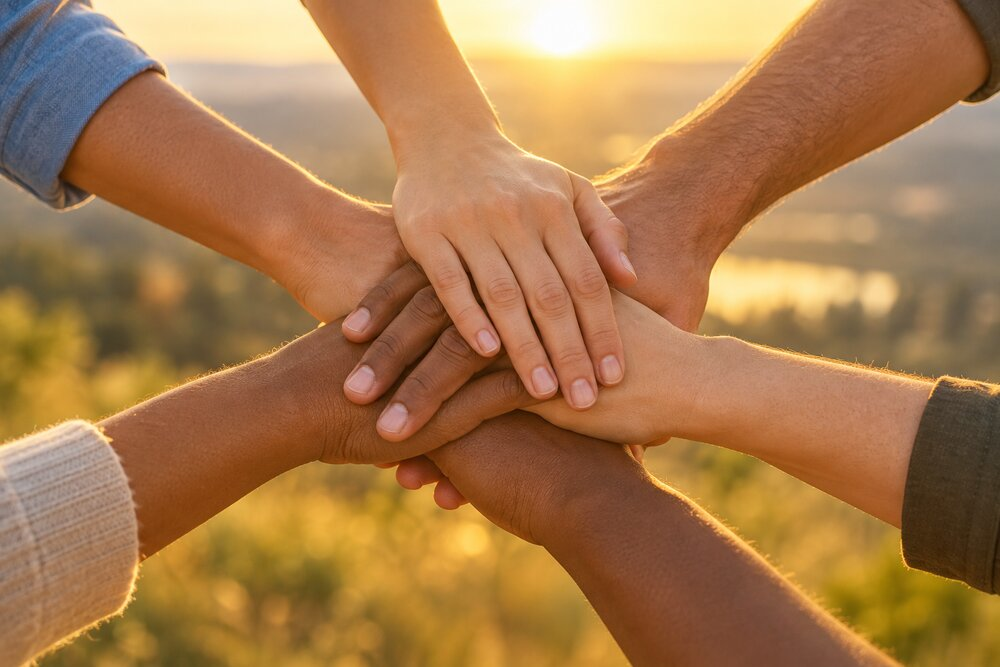
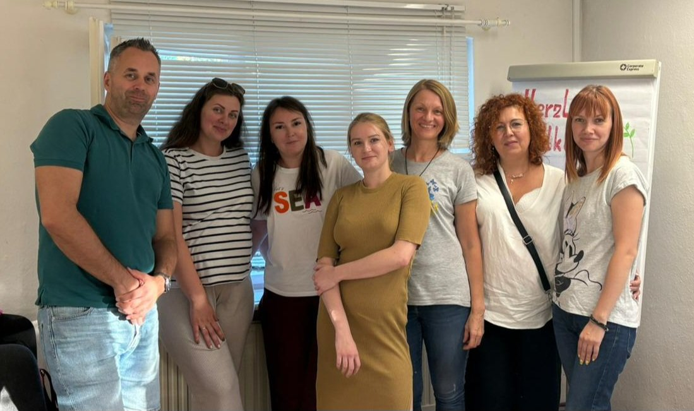

Star Dance – Tanz & Kreativität
Tanzkurse für Kinder, Jugendliche und Erwachsene. Wir fördern Talente, Selbstbewusstsein und Gemeinschaft durch Bewegung.
Mehr erfahrenDU Verein Rasom‑Miteinander e.V. für Kultur, Soziales, Bildung und Entwicklung
Ansprechpartner für die ukrainische Gemeinschaft in Königs Wusterhausen, Zeuthen und umliegenden Gemeinden, Brandenburg, LDS.


Tanzkurse für Kinder, Jugendliche und Erwachsene. Wir fördern Talente, Selbstbewusstsein und Gemeinschaft durch Bewegung.
Mehr erfahren
Humanitäre Hilfe, Unterstützung von Familien und Kindern sowie Projekte, die direkt in der Ukraine Wirkung zeigen.
Mehr erfahren
Deutschkurse, Workshops und Trainings zur Integration, beruflichen Orientierung und persönlichen Weiterentwicklung.
Mehr erfahren
Wir initiieren und realisieren Projekte, die verbinden, stärken und nachhaltige Veränderungen schaffen.
Mehr erfahren
Wir sind die Gründerinnen und Gründer des Vereins DU Rasom‑Miteinander e.V. und aktive Mitglieder der ukrainischen Gemeinschaft. Herzlich willkommen auf unserer Startseite.
Unser Ziel ist es, die ukrainische Gemeinschaft in Deutschland zu vereinen, ein warmes und freundliches Umfeld für alle zu schaffen, die durch die Umstände hierher gekommen sind, einander zu unterstützen und uns gleichzeitig für neue Begegnungen mit unseren deutschen Freundinnen, Freunden und Nachbarn zu öffnen.
Wir wurden im Oktober 2025 gegründet und beginnen unsere Arbeit im Landkreis Dahme‑Spreewald. Unsere wichtigsten Anlaufstellen sind Zeuthen und Königs Wusterhausen.